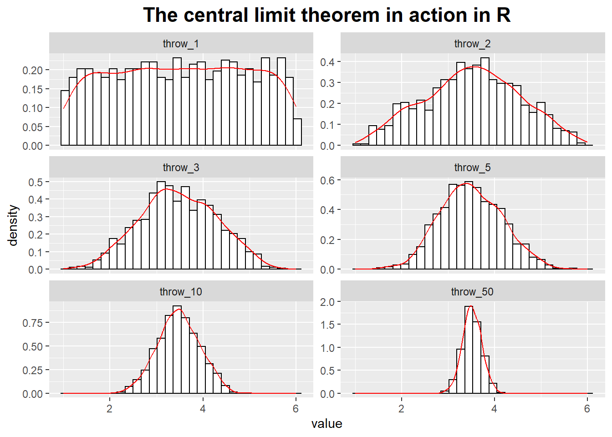

The Binomial Distribution
The probability of observing k Successes in N trials with Success probability p is known as the Binomial distribution.
# The binomial distribution
library(ggplot2)
library(reshape2)
binom_df <- data.frame(k = seq(0, 21),
trials_10 = dbinom(seq(0, 21), size = 10, prob = 1/6),
trials_30 = dbinom(seq(0, 21), size = 30, prob = 1/6),
trials_60 = dbinom(seq(0, 21), size = 60, prob = 1/6),
trials_90 = dbinom(seq(0, 21), size = 90, prob = 1/6))
binom_df2 <- melt(binom_df, id.vars = "k")
ggplot(binom_df2, aes(x = k, y = value, color = variable, shape = variable)) +
geom_line() +
geom_point(size = 1.8) +
xlab("Number of Successes") +
ylab("Probability") +
ggtitle("The Binomial distribution: success probability is 1/6") +
theme(plot.title = element_text(hjust = 0.5, size = rel(1.5), face = "bold"))The Gaussian Distribution and the Central Limit Theorem
The central limit theorem states that the sums of a bunch of random quantities will be distributed according to a Gaussian distribution.
In the upper-left corner of the graph we have thrown the die only once and thus form the “average” over only a single throw.
You can see that all of the possible values are about equally likely: the distribution is uniform.
In the upper-right corner, we throw the dice twice every time and form the average over both throws.
Already a central tendency in the distribution of the average of values can be observed!
We then continue to make longer and longer averaging runs.
throw_1 <- runif(n = 1000, min = 1, max = 6)
throw_n <- function(n) {
throw <- c()
for (i in 1 : 1000) {
throw <- c(throw, mean(runif(n = n, min = 1, max = 6)))
i <- i + 1
}
throw
}
throw_2 <- throw_n(n = 2)
throw_3 <- throw_n(n = 3)
throw_5 <- throw_n(n = 5)
throw_10 <- throw_n(n = 10)
throw_50 <- throw_n(n = 50)
throw_df <- data.frame(throw_1 = throw_1, throw_2 = throw_2,
throw_3 = throw_3, throw_5 = throw_5,
throw_10 = throw_10, throw_50 = throw_50)
throw_df_m <- melt(throw_df)
ggplot(throw_df_m, aes(x = value, y = ..density..)) +
geom_histogram(fill = "white", colour = "black") +
geom_line(stat = "density", colour = "red") +
facet_wrap( ~ variable, ncol = 2, scales = "free_y") +
ggtitle("The central limit theorem in action in R") +
theme(plot.title = element_text(hjust = 0.5, size = rel(1.5), face = "bold")) The strength and the limitation of the Gaussian model:
The properties of power-law distributions:
Power-law distribution have been observed in a number of different areas: the frequency with which words are used in texts, the magnitude of earthquakes, the size of files, the copies of books sold, the intensity of wars, the sizes of sand particles and solar flares, the population of cities, and the distribution of wealth.
Power-law distributions have no parameters that could estimated - except for the exponent, which we know how to obtain from a double logarithmic plot.
There are some other distributions that describe common scenarios we should be aware of.
Geometric Distribution
It is a special case of the binomial distribution.
It can be viewed as the probability of obtaining the first Success at the kth trial (i.e., after observing k - 1 failures).
It has mean = 1/prob and standard deviation = sqr(1-prob)/prob.
geom_df <- data.frame(k = seq(1, 10),
prob_0.2 = dgeom(seq(1, 10), prob = 0.2),
prob_0.5 = dgeom(seq(1, 10), prob = 0.5),
prob_0.8 = dgeom(seq(1, 10), prob = 0.8))
geom_df2 <- melt(geom_df, id.vars = "k")
ggplot(geom_df2, aes(x = factor(k), y = value, group = variable, color = variable, shape = variable)) +
geom_line() +
geom_point(size = 1.8) +
xlab("") +
ylab("") +
ggtitle("The geometric distribution in R") +
theme(plot.title = element_text(hjust = 0.5, size =rel(1.5), face = 'bold'))Poisson Distribution
It describes the probability of finding k events during some continuous observation interval of known length.
It is appropriate for processes in which discrete events occur independently and at a constant rate: calls to a call center, misprints in a manuscript, traffic accidents, and so on.
poisson_df <- data.frame(k = seq(0, 20),
lambda_1 = dpois(seq(0, 20), lambda = 1),
lambda_3 = dpois(seq(0, 20), lambda = 3),
lambda_10 = dpois(seq(0, 20), lambda = 10))
poisson_df2 <- melt(poisson_df, id.vars = "k")
ggplot(poisson_df2, aes(x = factor(k), y = value, group = variable, color = variable, shape = variable)) +
geom_line() +
geom_point(size = 1.8) +
xlab("") +
ylab("") +
ggtitle("The poisson distribution in R") +
theme(plot.title = element_text(hjust = 0.5, size =rel(1.5), face = 'bold'))Log-Normal Distribution
Some quantities are inherently asymmetrical.
Consider, for example, the time it takes people to complete a certain task: because everyone is different, we expect a distribution of values.
However, all values are necessarily positive.
Moreover, we can expect a particular shape of the distribution: there will be some minimum time that nobody can beat, then a small group of very fast champions, a peak at the most typical completion time, and finally a long tail of stragglers.
Clearly, such a distribution will not be well described by a Gaussian, which is defined for both positive and negative values of x, is symmetric, and has short tails.
The log-normal distribution is related to the Gaussian: a quantity follows the log-normal distribution if its logarithm is distributed according to a Gaussian.
log_norm_df <- data.frame(k = seq(0, 5, by = .1),
sdlog_2 = dlnorm(seq(0, 5, by = .1), meanlog = 1, sdlog = 2),
sdlog_1 = dlnorm(seq(0, 5, by = .1), meanlog = 1, sdlog = 1),
sdlog_0.5 = dlnorm(seq(0, 5, by = .1), meanlog = 1, sdlog = 1/2),
sdlog_0.25 = dlnorm(seq(0, 5, by = .1), meanlog = 1, sdlog = 1/4))
log_norm_df2 <- melt(log_norm_df, id.vars = "k")
ggplot(log_norm_df2, aes(x = k, y = value, group = variable, color = variable, shape = variable)) +
geom_line() +
geom_point(size = 1.8) +
xlab("") +
ylab("") +
ggtitle("The log-normal distribution in R") +
theme(plot.title = element_text(hjust = 0.5, size =rel(1.5), face = 'bold'))Sampling Distribution
These distributions are not used to describe events in the real world, they describe how the outcomes of specific typical calculations involving random quantities will be distributed.
Gaussian distribution:
Student t distribution:
norm_df <- data.frame(k = seq(-3, 3, by = .1),
norm = dnorm(seq(-3, 3, by = .1)),
t = dt(seq(-3, 3, by = .1), df = 3))
norm_df_m <- melt(norm_df, id.vars = "k")
ggplot(norm_df_m, aes(x = k, y = value, colour = variable)) +
geom_line() +
ggtitle("The Gaussian distribution and the t distribution") +
theme(plot.title = element_text(hjust = 0.5, size =rel(1.5), face = 'bold'))Chi-square distribution:
Fisher’s F distribution:
chi_df <- data.frame(k = seq(1, 20, by = .1),
chi = dchisq(seq(1, 20, by = .1), df = 3),
f = df(seq(1, 20, by = .1), df1 = 3, df2 = 3))
chi_df_m <- melt(chi_df, id.vars = "k")
ggplot(chi_df_m, aes(x = k, y = value, colour = variable)) +
geom_line() +
ggtitle("The chi-square distribution and the F distribution") +
theme(plot.title = element_text(hjust = 0.5, size =rel(1.5), face = 'bold'))Referenced:
Data Analysis with Open Source Tools
R Graphics Cookbook
Welcome your advice and suggestion!
Just record, this article was posted at linkedin, and have 51 views to November 2021.